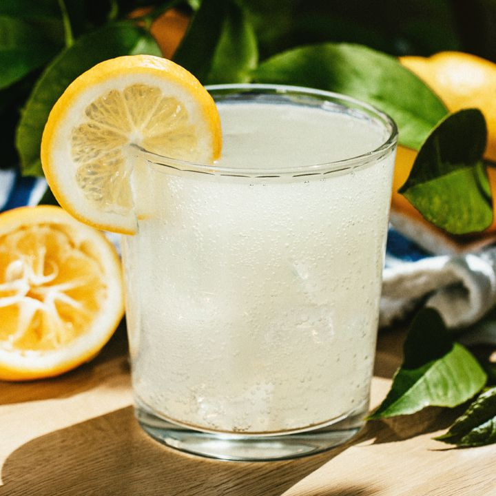

Lemonade
Lemonade is a sweetened lemon-flavored beverage. There are varieties of lemonade found throughout the world. In North America and South Asia, cloudy lemonade dominates.
Ingridents
- 1 cup sugar (can reduce to 3/4 cup)
- 1 cup water (for the simple syrup)
- 1 cup freshly squeezed lemon juice
- 2 to 3 cups cold water, to dilute
Steps
- Place the sugar and water in a small saucepan and bring to a simmer. Stir so that the sugar dissolves completely and remove from heat
- While the water is heating for the simple syrup, juice your lemons. Depending on the size of the lemons, 4 to 6 of them should be enough for 1 cup of juice.
- Pour the juice and the simple syrup sugar water into a serving pitcher. Add 2 to 3 cups of cold water and taste. Add more water if you would like it to be more diluted (though note that when you add ice, it will melt and naturally dilute the lemonade). If the lemonade is a little sweet for your taste, add a little more straight lemon juice to it.
- Refrigerate 30 to 40 minutes. Serve with ice and sliced lemons.